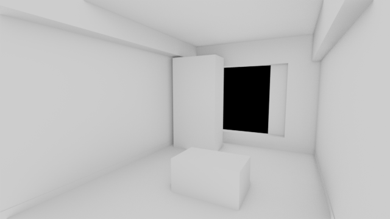
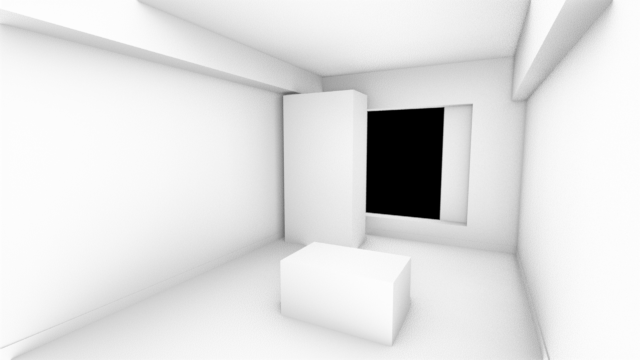
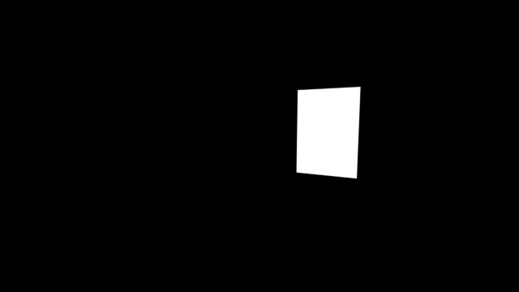
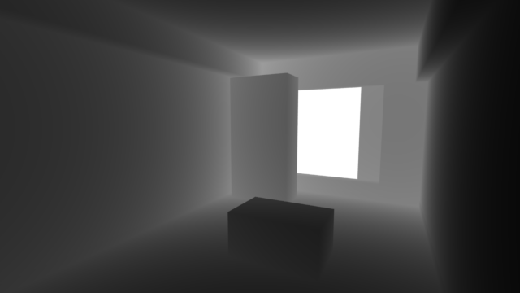
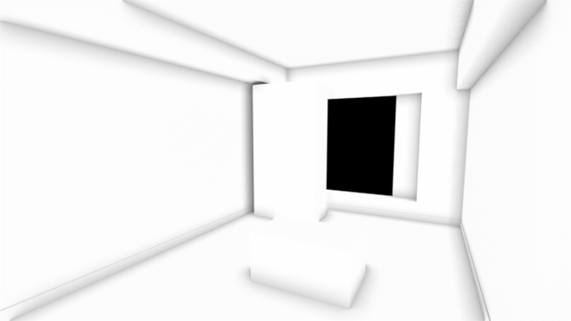
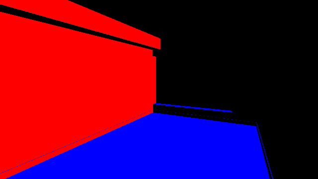
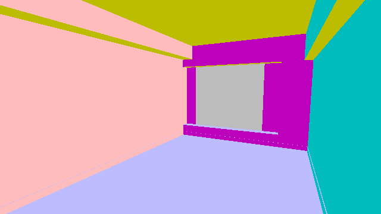
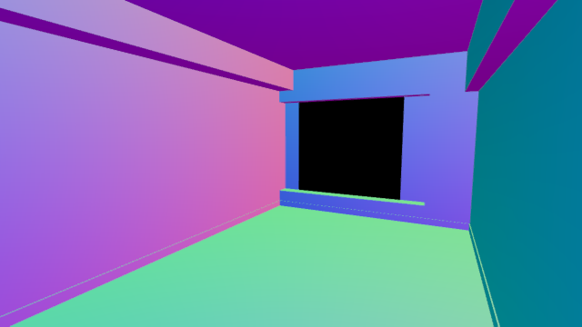
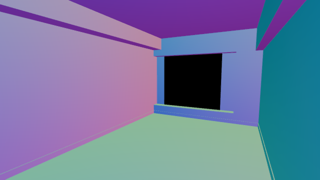

Blender 5.2 LTS / ビューレイヤー / AO ・ Z 深度 ・ ミスト ・ Cryptomatte
Blender 5.2 で試すと、パスそのものはちゃんと出ます。
真っ白・真っ黒になる原因は、ほとんどが 「初期値のまま」と「値の範囲」。5.2 でも初期値のままだと起きます（このページの数値と画像は、講座の部屋モデルで実測）。
Z 深度だけはコンポジターで白黒の画像に直してから出すのがいちばん迷いません。
Before / After
症状から、直す場所へ飛べます。
| 症状 | 原因 | 直す |
|---|---|---|
| Z が真っ白 | 中身がメートルの数字。画像は 1 より上が全部白なので、1 m より奥は真っ白 | 02 |
| ミストが真っ黒 | 初期値が 開始 5 m ／ 深度 25 m。部屋はほぼ 5 m 以内なので全部 0（黒） | 03 |
| AO が真っ白（EEVEE） | 初期値の オクルージョン距離 0.2 m が短すぎて、輪郭にしか影が出ない | 04 |
| AO が真っ黒（Cycles） | 初期値の AO の距離 10 m が部屋より大きく、どこも「囲まれている」扱い | 05 |
| AO がザラザラ（Cycles） | レンダーのデノイズは AO パスには効かない | 05 |
| AO がうす灰色に濁る | ビューが Filmic ／ AgX のまま、ファイル出力の レンダーとして保存 が ON | 02 |
| ノーマルが赤・青・黒だけ | ビューレイヤーのノーマルは マイナスの値を含む。PNG ではマイナスが黒になる | N1 |
| プレイブラストのノーマルが濁る | ビューが Filmic ／ AgX。標準なら PNG でも濁らない | N2 |
| パスがファイルに無い | 出力が 画像（PNG など）だと、合成した絵 1 枚しか書き出されない | 01 |
Route / どっちで出す？
全部をコンポジター経由にする必要はありません。EXR にそのまま入れて困らないものと、白黒の画像にしておくと楽なものに分けます。
| パス | 出し方 | 理由 |
|---|---|---|
| Cryptomatte | EXR（本線）のまま | マスクの名前の情報が EXR に一緒に入る。PNG にはできない |
| ミスト | EXR のままで OK （白黒 PNG も一緒に出すと楽） | 最初から 0〜1（黒〜白）の値。ワールドの設定を直すだけ |
| Z 深度 | コンポジター → 白黒 PNG | 中身がメートルの数字なので、そのままだと AE でも真っ白 |
| AO | コンポジター → 白黒 PNG | 「レンダーとして保存」を OFF にできる。Cycles ならデノイズも掛けられる |
画像エディターで「深度」を表示すると真っ白に見えますが、これは正常です。壊れていません（02 の仕組みを参照）。
選ぶとファイルフォーマットが自動で OpenEXR マルチレイヤーになります。
Depth.Z という名前。Cryptomatte の情報も入る。Depth.V という名前になる。ここで AO ・ミストの PNG 用の口も一緒に作ります。つなぐのは 03 〜 05 で。
追加 → ユーティリティ → 数式 → 範囲マッピング ／ 追加 → 出力 → ファイル出力
手前が黒、奥へ行くほど白になれば成功。窓の外（何も無いところ）は白になります。





| オクルージョン距離 | 平均の明るさ（1 ＝ 真っ白） |
|---|---|
| 0.2 m（初期値） | 0.94 |
| 0.5 m | 0.92 |
| 1 m | 0.90 |
| 2 m | 0.88 |
高速 GI 近似のチェックは OFF のままで OK。項目がうすく表示されていても、数字を変えれば AO パスに効きます（テストで確認）。
追加 → フィルター → デノイズ
| 設定 | 平均の明るさ | ザラつき |
|---|---|---|
| 10 m（初期値） | 0.07（真っ黒） | — |
| 1 m ／ 32 サンプル | 0.84 | 0.015 |
| 1 m ／ 128 サンプル | 0.84 | 0.006 |
| 1 m ／ 32 サンプル ＋ デノイズノード | 0.84 | 0.001 |
ザラつき ＝ となりのピクセルとの差（小さいほどなめらか）。レンダープロパティのデノイズは ON のままで測定。
Output / 2 つの書き出し口
どちらもレンダーの書き出しですが、別々に動く 2 つの口です。コンポジターでファイル出力ノードを使っても、出力プロパティの書き出しは止まりません。テストで確かめた結果です。
| 出力プロパティ（本線） | ファイル出力ノード | |
|---|---|---|
| 出すもの | 合成した絵＋（EXR なら）全パス・Cryptomatte | ノードにつないだものだけ（z ・ mist ・ ao） |
| 書き出し先 | 出力プロパティのフォルダ欄 | ノードの「ディレクトリ」 |
| Ctrl+F12 | 毎コマ書き出す | 毎コマ書き出す |
| F12（静止画） | 書き出さない（画像 → 保存で手動） | 書き出す（番号なしの shot_z.png など。毎回上書き） |
しない方がいいです。空欄でも書き出しは止まらず、Blender を起動したフォルダに 0001.exr … が出ます（テストでは .blend の隣ではなく、起動した場所に出た）。
→ //_out/main/ のように .blend の隣の専用フォルダを指定。
名前が違うので消し合いません（0001.exr と shot_z0001.png）。ただ混ざると探しにくいので、main と passes でフォルダを分けるのがおすすめ。
かかりません。レンダー（絵を作る計算）は 1 回で、書き出しが 2 か所になるだけ。テストで 6 コマ：本線 EXR 2.86 秒 ／ 本線 JPEG 2.82 秒。
差が出るのは容量：同じ 6 コマで EXR 15.5 MB、JPEG 0.1 MB（640×360 で測定。フル HD ならおよそ 9 倍）。
AE では 使わずに消して OK（プロジェクトから外すだけで、EXR ファイルはそのまま）。
ただ Blender 側で 入れない設定にはできません。ビューレイヤーの Z を切ると、コンポジターの「深度」も消えて shot_z.png が作れなくなるため。EXR は「ビューレイヤーで ✓ したパスは全部入る」作りです。
容量は EXR の約 1/4（テストで 2.59 MB → Z なし 1.88 MB）。気になるなら色深度を Float（ハーフ）に（01）。
EXR の Z は真っ白に見えても中身は正しい距離（m）なので、あとで「手前と奥の範囲を変えたい」ときの保険になります（AE のレベル補正で白の位置を 4〜6 に）。
同じように Composite.Combined と ViewLayer.Combined、ミスト、AO も PNG と二重に入りますが、使うほうだけ使えば大丈夫です。
本線は止められないので、メディアタイプを 画像 ／ JPEG にして軽い確認用にしておく。Cryptomatte を使うなら本線は EXR のまま（PNG にはできない）。
Normal / 2 つのノーマル
どちらも「面の向き」を色にしたものですが、向きの基準と値の範囲が違うので、見た目も違います。
| ビューレイヤーのノーマル | プレイブラストのノーマル | |
|---|---|---|
| 出し方 | ビューレイヤー → パス → データ → ノーマル | ソリッド表示 → 照明 MatCap → check_normal+y でプレイブラスト |
| 向きの基準 | ワールド（部屋）。カメラが動いても同じ壁は同じ色 | カメラ（画面）。カメラが回ると色も変わる |
| 値 | −1 〜 1（マイナスあり）。データ | 0 〜 1 の色。見るための絵 |
| PNG にすると | マイナスが黒になり、赤・青・黒だけに | ビューが Filmic ／ AgX だと濁る |




EXR のまま AE で使うならこの作業はいりません（EXR にはマイナスもそのまま入る）。PNG でそろえたいときだけ。
追加 → ユーティリティ → ベクトル → ベクトル演算
床・壁・天井がパステル調の色に分かれれば成功。真っ黒な面がなくなります。
| ビュー ／ 形式 | 色の鮮やかさ | 標準 PNG との差 |
|---|---|---|
| 標準 ／ PNG | 0.61 | — |
| 標準 ／ EXR Float（フル） | 0.61 | 0.0002（ほぼ同じ） |
| 標準 ／ EXR Float（ハーフ） | 0.61 | 0.0002（ほぼ同じ） |
| Filmic ／ PNG | 0.53 | 濁る |
| AgX ／ PNG | 0.43 | もっと濁る |
困ったら、ここから。
正常です。中身がメートルの数字なだけ → 書き出すときに 02 で白黒にする。
範囲マッピングの数字が部屋に合っていない → 白すぎたら「最大から」を増やす、黒すぎたら減らす（02）。深度から直接ファイル出力につないでいないかも確認。
ワールドのミストパスが初期値（開始 5 m）→ 開始 0 ／ 深度は奥の壁までの距離に（03）。
オクルージョン距離 0.2 m のまま → 1〜2 m に（04）。
AO の距離 10 m のまま → 1 m に。ザラザラはデノイズノードで（05）。
ビューが Filmic ／ AgX で「レンダーとして保存」が ON → OFF に（02）。
ビューレイヤーのノーマルはマイナスを含む → ×0.5＋0.5 してから PNG に（N1）。EXR のままなら問題なし。
カラーマネージメントのビューが Filmic ／ AgX → 標準 に（N2）。
出力プロパティのメディアタイプが「画像」のまま → Multi-Layer EXR に（01）。
出力プロパティのフォルダ欄が空欄 → //_out/main/ を指定（2 つの書き出し口）。
ファイル出力ノードは F12 でも書き出します。確認中はノードを選んで M（ミュート）にしておくと止まる。
「上書き」が OFF、または「コンポジティング」が OFF（2 つの書き出し口）。
正規化ノードを使っている → 範囲マッピングで数字を固定（02）。
当時の EEVEE は、レンダープロパティの「アンビエントオクルージョン」にも ✓ が必要でした。5.x ではこの項目はなく、パスに ✓ だけで出ます（5.2 で確認。旧版はこのページでは未検証）。